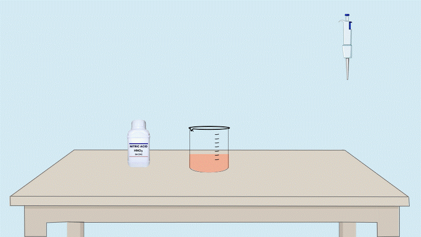
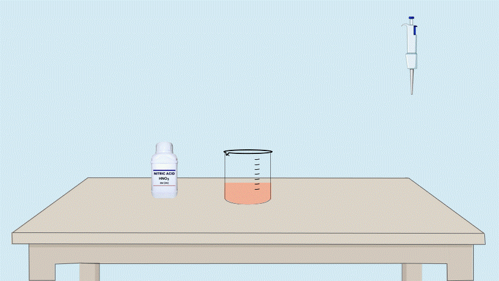

Determination of Iron Oxide (Fe₂O₃) and Aluminium Oxide (Al₂O₃)
Step 4:Oxidation Medium Preparation
About this step:
In this step, To the solution containing Fe³⺠and Al³⺠(from the precipitate dissolved in HCl), add
concentrated HNO₃.
HNO₃ ensures that the medium is strongly acidic and oxidizing, which prevents
interference from Al³⺠and stabilizes Fe ions during reduction and titration.
Click on the pipette
 

👇